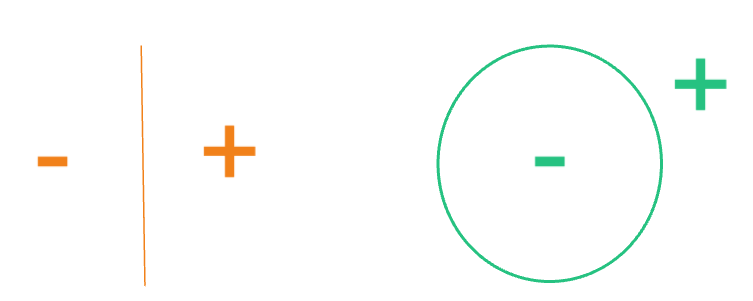
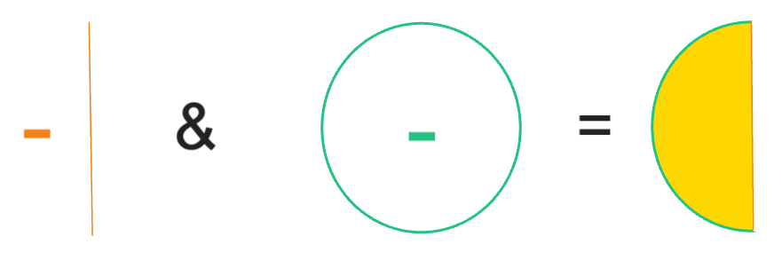

Constructive Solid Geometry
CSG is a geometry representation in which models are created through boolean combinations of surfaces, cells, and universes. CSG models are most commonly used for Monte Carlo (MC) neutronics simulations. While each MC code has their own syntax for defining the CSG model, the underlying theory for creating CSG representations is the same throughout. The CSGBase class provides the framework in MOOSE for creating these generic CSG representations of geometries through MOOSE mesh generators. These can then be used by MC codes.
Theory
As stated, a CSG representation is defined minimally as a series of surfaces, cells, and universes, each described below. Additional components such as lattices and engineering units can also be defined. For a more detailed description of how surfaces, cells, universes, lattices, and engineering units are represented within the MOOSE mesh generator system, please refer to CSGBase.
Surfaces
Surfaces are defined explicitly through surface equations (such as equations of a plane, sphere, etc.). Each surface inherently separates two half-space regions: positive and negative half-spaces. For example, for a plane with the equation the positive half-space represents the region , while the negative half-space represents the region . Similarly, for a spherical surface defined by the equation , the negative half-space represents the region within the sphere while the positive half-space represents the region outside the sphere. Example half-spaces are shown in Figure 1.

Figure 1: Example depiction of the positive and negative half-spaces defined by a plane (left) and sphere (right).
These half-space regions defined by the surfaces can be combined further as series of boolean operators for unions, intersections, and complements to further define more complex regions. For example, if we wanted to use the surfaces from Figure 1 to define just the left hemisphere, we would define the cell region as the intersection of the negative half-space of the plane and the negative half-space of the sphere (Figure 2).

Figure 2: Example depiction of a closed region defined by an intersection of two half-spaces.
Cells
Cells are defined by two main characteristics: a region and a fill. The region is defined as described above and defines the domain of the cell. The fill can typically be set as void (i.e., nothing), a material (placeholder type for now, this will be expanded in future works), a universe, or a lattice.
Universes
Universes can then be optionally defined as a collection of cells, which can then be used to either fill other cells, or used repeatedly throughout a geometry (such as in a repeated lattice). By default, every model will have a root universe, which is the singular overarching universe that all other universes can be traced back to through the tree defined by universes containing cells and cells filled with universes.
Lattices
Lattices are another optional component. A lattice is the arrangement of repeated universes in a defined structure. Some common types are regular Cartesian or hexagonal lattices (examples can be seen here). Lattices will sometimes contain universes in the elements of the lattice that do not fill the full spatial domain of that element. Therefore, lattices also often rely on a definition of an "outer" fill, usually a single material or another universe, which fills the undefined spatial domain within the lattice. A visual depiction of a lattice with an outer fill is shown in Figure 3.

Figure 3: A visual of a regular hexagonal lattice where the red lines represent the boundary of each of the lattice elements, the yellow circles are the spatial extent of the universe that fills each lattice element, and the blue is the "outer" that fills the remaining spatial domain around the lattice element universes.
Engineering Units
An "engineering unit" refers to a broad class of user-friendly domain-specific objects that can be used in place of the standard rudimentary CSG components. Each type of engineering unit is defined by a set of intuitive and domain-specific attributes that describe the geometry. The idea is that these attributes are much simpler for a user to define than all the necessary rudimentary CSG components, but comprehensive enough such that the unit can be automatically deconstructed into the standard CSG components if necessary. The "units" are then usable in place of a surface, cell, or universe, depending on its defined behavior. An example of this is defining an infinite regular N-sided polygon region.
How to Generate a CSG Model
The CSG model generation can be invoked on the command line using the --csg-only option with any MOOSE mesh input file. The JSON file that is generated will be called the name of the input file with _csg appended by default. An optional output file name can be provided on the command line (--csg-only <output_file_name.json>).
A CSG JSON file will be produced if and only if all mesh generators in the input file have the generateCSG method implemented. If any mesh generators do not have the generateCSG method implemented, an error will be returned explaining as such. This process is run as a data-only mode so no finite element mesh is produced.
Output
Calling --csg-only will produce a JSON file containing the complete geometric description of the mesh generator input. There are four main sections in the file:
lattices(if any)engineering units(if any)
Each item within each section is keyed (a JSON is a dictionary) by its unique name identifier, and the value is the corresponding definition for that item. Detailed description of each type of item in the section follows.
Surfaces
Surfaces contain the following information:
type: the type of surface as defined by the class name that was used to create the surfacecoefficients: the values for each coefficient in the equation defining the surface type (shown in the table below)
type | Equation | coefficients |
|---|---|---|
CSG::CSGPlane | a, b, c, d | |
CSG::CSGSphere | x0, y0, z0, r | |
CSG::CSGXCylinder | y0, z0, r | |
CSG::CSGYCylinder | x0, z0, r | |
CSG::CSGZCylinder | x0, y0, r |
Below is an example JSON surface output for a model with a CSG::CSGPlane at and a CSG::CSGPlane at .
"surfaces": {
"inf_square_surf_minus_x": {
"coefficients": {
"a": -1.0,
"b": 0.0,
"c": 0.0,
"d": 2.0
},
"type": "CSG::CSGPlane"
},
"inf_square_surf_minus_y": {
"coefficients": {
"a": 0.0,
"b": 1.0,
"c": 0.0,
"d": -2.0
},
"type": "CSG::CSGPlane"
},
Cells
The cells output contains the following information:
region_infix: the infix (human readable) string representation of the equation of boolean operators (listed below) and surface names that defines the cell regionregion_postfix: list of strings representing the postfix (also known as Reverse Polish) notation of the equation of boolean operators (listed below) and surface names that defines the cell regionfilltype: type of fill in the cell ("VOID","CSG_MATERIAL","UNIVERSE", or"LATTICE")fill: for"CSG_MATERIAL","UNIVERSE", or"LATTICE"filltype, the name of the fill object (if"VOID"type, then name is an empty string"")
| Boolean Operator | Symbol Representation in Region Output |
|---|---|
| positive half-space | + |
| negative half-space | - |
| union | | |
| intersection | & |
| complement | ~ |
Internally, CSGBase represents each cell region in postfix notation (also known as Reverse Polish notation). While an infix representation of the region may be easier to conceptualize, postfix notation may be more useful for conversion steps to downstream Monte Carlo codes, as this representation provides an unambiguous precedence ruleset for boolean operators without having to parse through groupings of parentheses. An example of a cell defined as the space inside a box made of six planes and filled with a solid material is below:
"cells": {
"cube_box_cell": {
"fill": "square_material",
"filltype": "CSG_MATERIAL",
"region_infix": [
"+inf_square_surf_plus_x",
"&",
"-inf_square_surf_minus_x",
"&",
"-inf_square_surf_plus_y",
"&",
"+inf_square_surf_minus_y",
"&",
"-cube_surf_plus_z",
"&",
"+cube_surf_minus_z"
],
"region_postfix": [
"inf_square_surf_plus_x",
"+",
"inf_square_surf_minus_x",
"-",
"&",
"inf_square_surf_plus_y",
"-",
"&",
"inf_square_surf_minus_y",
"+",
"&",
"cube_surf_plus_z",
"-",
"&",
"cube_surf_minus_z",
"+",
"&"
],
"transformations": [
[
"ROTATION",
[
45.0,
0.0,
0.0
]
]
]
}
},
Universes
Universes are simply defined by the list of the names of the cells that are contained in that universe. If the universe is also the root universe, it will have the designator "root": true. An example of universe output for multiple universes containing various concentric cylinder cells is below. In this example, there is one universe, the default "ROOT_UNIVERSE", which contains one cell and is labeled as being the root universe.
"universes": {
"ROOT_UNIVERSE": {
"cells": [
"cube_box_cell"
],
"root": true
}
}
}
Lattices
Lattice output contains the following information:
type: the type of lattice as defined by the class name that was used to create the latticeuniverses: the array of universe names that define the lattice arrangementoutertype: the type of outer fill in the undefined space of the lattice elements ("VOID","CSG_MATERIAL", or"UNIVERSE")outer: for"CSG_MATERIAL"or"UNIVERSE"outertype, the name of the outer fill objectany other attributes associated with the specific lattice type (e.g., pitch, number of rows, etc.)
Two types of lattices are directly supported in the CSGBase class: CSG::CSGCartesianLattice and CSG::CSGHexagonalLattice. The additional attributes that are provided for each of these types are:
CSGCartesianLattice:nrow: the number of rowsncol: the number of columnspitch: the flat-to-flat distance of a single lattice element
CSGHexagonalLattice:nring: number of rings (consistent with the number of rows)nrow: the number of rows (consistent with the number of rings)pitch: the flat-to-flat distance of a single lattice element
Below is example output for a Cartesian lattice filled with two different universes called sq1_univ and sq2_univ.
"lattices": {
"cart_lat_lattice": {
"attributes": {
"ncol": 2,
"nrow": 2,
"pitch": 5.0
},
"outertype": "VOID",
"type": "CSG::CSGCartesianLattice",
"universes": [
[
"sq1_univ",
"sq1_univ"
],
[
"sq1_univ",
"sq2_univ"
]
]
}
},
Engineering Units
If any engineering units are used, they will be located in the units section. Each unit includes the following information:
unit_type: the type of units as defined by the class name that was used to create the unitbehavior: what type of component this unit behaves as, either"SURFACE","CELL", or"UNIVERSE".attributes: a map of a unit-specific attribute names to their values.
If engineering units are included in a model, the name of those units may be present in other component definitions as if it were the type of object that it behaves like. For example, below is an N-sided polygon engineering unit (3 sides in this case) which behaves like a surface. It is used as a surface name to define the region of the cell. Because the only surface in this model is actually an engineering unit, the surfaces output block is not include as there are no plain surface objects present.
{
"cells": {
"tri_prism_poly_cell": {
"fill": "poly_material",
"filltype": "CSG_MATERIAL",
"region_infix": [
"-tri_prism_poly_surf"
],
"region_postfix": [
"tri_prism_poly_surf",
"-"
]
}
},
"units": {
"tri_prism_poly_surf": {
"attributes": {
"apothem": 4.0,
"num_sides": 3
},
"behavior": "SURFACE",
"unit_type": "CSG::CSGNPolygonUnit"
}
},
"universes": {
"ROOT_UNIVERSE": {
"cells": [
"tri_prism_poly_cell"
],
"root": true
}
}
}